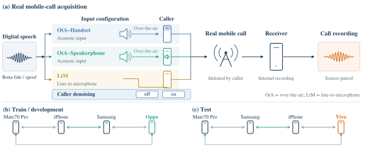
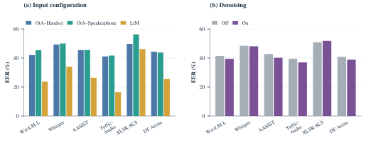
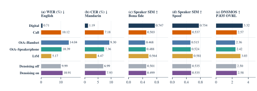
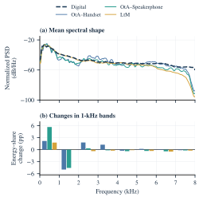
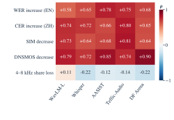
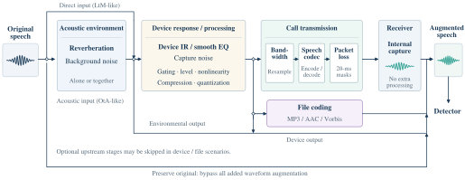
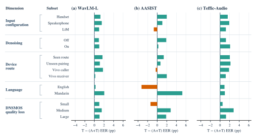

Audio deepfake detection · Real communication channels
RealCommBenchmarking and Adapting Audio Deepfake Detection
over Real Mobile-Call Channels
Abstract
Audio deepfake detectors often perform well on digital waveforms, yet a received phone call combines acoustic capture, device processing, and communication transmission. RealComm studies this gap using paired digital and real-call speech. The corpus comprises 12,320 training and development recordings and 23,520 test recordings, with acoustic and wired injection, directed device routes, and caller-controlled denoising. Six existing detectors show substantial degradation after real calls. Paired quality and spectral analyses reveal that high-frequency attenuation alone does not explain detection difficulty. We further evaluate RealComm-Aug, real-call training, and their combination on three detectors. Combined adaptation achieves the lowest pooled call EER for each model, while acoustic injection and condition-dependent tradeoffs remain challenging.
Dataset and acquisition
Every source utterance has a digital reference and multiple real-call versions. Bona fide and synthetic speech traverse the same recording conditions; all versions of a source remain in one split.

| Split | Digital sources | Recorded sources | Conditions / source | Call recordings |
|---|---|---|---|---|
| Train | 1,792 | 224 | 44 | 9,856 |
| Development | 448 | 56 | 44 | 2,464 |
| Test | 560 | 560 | 42 | 23,520 |
The source pool is balanced by authenticity and language (English / Mandarin), with synthetic speech from seven generators. Train and test share the generator set. Repeated call versions expand condition coverage rather than the number of independent source utterances.
Paired audio examples
Explore 16 source examples in English and Mandarin: bona fide speech and all seven TTS systems, spanning eight directed device routes. Within each example, the digital reference and three call configurations share the same source utterance; the call route is fixed.
Choose a language and voice source above. For bona fide and CosyVoice2 examples, switch denoising off/on to compare matched recordings. Other examples show their recorded denoising state below each player; “no user-controlled switch” is distinct from off. OtA uses acoustic injection; LtM uses a wired microphone input. WAV files are unchanged and are not loudness-normalized; selection does not use detector scores.
Zero-shot detection
All six detectors have higher EER after call transmission; five increase by more than 30 percentage points. A smaller change from a weak digital baseline, as for XLSR-SLS, does not imply better channel robustness.
| Detector | Digital | Call | ΔEER (pp) |
|---|---|---|---|
| WavLM-L | 4.64 | 40.00 | +35.36 |
| Whisper | 15.71 | 47.88 | +32.17 |
| AASIST | 7.50 | 40.19 | +32.69 |
| Teffic-Audio | 0.00 | 37.95 | +37.95 |
| XLSR-SLS | 38.57 | 50.31 | +11.73 |
| DF Arena | 7.86 | 38.77 | +30.91 |

Speech quality and spectral changes
Call transmission increases recognition errors and reduces prompt-referenced speaker similarity and predicted overall quality. The quality ranking of input paths broadly follows their detection ranking, but improved speech quality does not guarantee improved authenticity detection.



Correlations are descriptive, not causal. Quality metrics use full utterances; detection uses the model-specific input prefix protocol described in the manuscript.
RealComm-Aug
RealComm-Aug samples one signal-path scenario and its operations for each waveform, with the same distribution for bona fide and synthetic speech. Acoustic environment, device processing, file coding, and call transmission form distinct stages and exits. The receiver adds no further replay.

FExisting model; no RealComm updates.
AOriginal digital training mixture with RealComm-Aug.
TOriginal digital mixture plus RealCommTrain, retaining the original digital augmentation.
A+TThe same data as T, with RealComm-Aug on digital examples.
Every adapted model starts from its corresponding F checkpoint. Real-call examples bypass the added data-side augmentation; existing model-internal neural-codec augmentation retains its training configuration. No augmentation is applied at evaluation.
Adaptation results
Real-call training gives larger gains than simulation alone. Their combination produces the lowest pooled call EER for all three models, reaching 22.37% for Teffic-Audio. Digital-domain results reveal a tradeoff for AASIST.
| Detector | Domain | F | A | T | A+T |
|---|---|---|---|---|---|
| WavLM-L | Digital | 4.64 | 4.29 | 3.21 | 3.21 |
| WavLM-L | Call | 40.00 | 38.71 | 35.48 | 34.16 |
| AASIST | Digital | 7.50 | 8.93 | 6.07 | 8.21 |
| AASIST | Call | 40.19 | 38.49 | 37.96 | 36.90 |
| Teffic-Audio | Digital | 0.00 | 0.36 | 0.36 | 0.00 |
| Teffic-Audio | Call | 37.94 | 34.92 | 23.84 | 22.37 |
Bold indicates the best setting within each model and domain. Teffic-Audio F uses a matched FP32 re-evaluation here (37.94%); the frozen zero-shot submission is 37.95%. Results are from single training runs.

Resources
The current study covers a fixed set of devices, two languages and seven generators. The results do not establish robustness to arbitrary hardware, communication services or unseen synthesis systems.